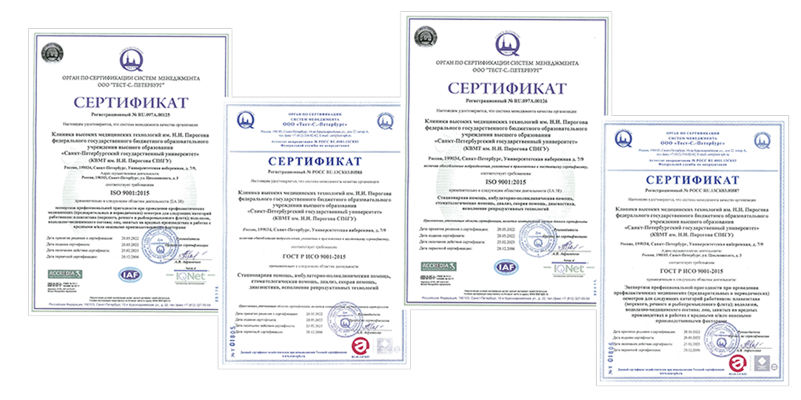

Политика качества
Этический кодекс в Клинике высоких медицинских технологий им. Н. И. Пирогова СПбГУ
В целях обеспечения успешного долгосрочного развития Клиники утверждён этический кодекс - утверждённый приказ Клиники, который включает перечень морально-этических норм и деловых принципов, стандартов взаимодействия с пациентами и их представителями, а также с коллегами.
- Наша идеология – идеология качества и доступности.
- Наша главная задача – предоставление самой современной медицинской услуги и ее постоянное совершенствование.
- Наше кредо – профессионализм и рост квалификации.
- Наша цель – внедрение высокотехнологичных методов диагностики и лечения.
- Наше назначение – сострадание больным людям, бескомпромиссная борьба с недугом и его всесторонняя профилактика на самых ранних этапах.
Наша миссия
На протяжении 158 лет мы предлагаем только лучшее, проявляя заботу о здоровье каждого пациента!
Главная цель в области качества Клиники высоких медицинских технологий им. Н. И. Пирогова – многопрофильной инновационной клиники – непрерывное улучшение качества услуг на основе постоянного повышения результативности системы управления в соответствии с требованиями международного стандарта ИСО 9001: 2015.
Руководство в лице директора принимает на себя обязательства по созданию соответствующих условий для реализации Политики и Целей в области качества и постоянному повышению результативности системы менеджмента качества.
Руководство принимает на себя ответственность за регулярное проведение анализа результатов реализации Политики в области качества и ее актуализацию при постановке новых целей и вытекающих из них задач.
Приоритетные задачи в области качества:
- формирование и развитие у персонала высоких принципов преданности избранной профессии и интересам больного человека;
- соответствие современным требованиям, предъявляемым к качеству распознавания болезней, с использованием последних достижений лабораторной и инструментальной диагностики, включая лучевые, морфологические, молекулярно- и цитогенетические методы исследования;
- совершенствование методов управления подразделениями с помощью АСУ;
- использование новейших способов оперативного и консервативного лечения, имеющих высокий уровень доказательности;
- улучшение качества услуг, достижение уровня, соответствующего непрерывно возрастающим требованиям потребителей;
- расширение рынка оказываемых услуг за счёт улучшения их качества и оптимизации стоимости, укрепление финансовой стабильности клиники, рост благополучия сотрудников.
Поставленные цели будут реализованы, если лечебно-диагностическая работа в подразделениях клиники будет соответствовать лучшим современным международным и отечественным стандартам. Это позволит выявлять болезни в раннем периоде их развития, а использование эффективных лекарственных средств и выполнение своевременных оперативных вмешательств предотвратит развитие осложнений, которые могут приводить к инвалидности или летальному исходу.
Главная задача состоит в том, чтобы оказываемые услуги соответствовали самым строгим стандартам качества и безопасности.
Решение главной задачи связано с реализацией усилий в следующих основных направлениях:
- лидерство руководства в вопросах создания и поддержания среды, обеспечивающей вовлечение персонала в достижение наилучших результатов деятельности в области качества;
- организация деятельности клиники на основе процессного и системного подходов к менеджменту, правильное распределение ресурсов и объективная оценка результатов деятельности для обеспечения постоянного повышения эффективности лечения;
- построение отношений со страховыми медицинскими компаниями и другими партнерами на основе сочетания взаимных выгод и долгосрочных планов, инициирование совместных разработок по совершенствованию предоставляемых медицинских услуг, совместное достижение четкого понимания нужд пациентов;
- обязательное выполнение всем персоналом требований и положений документации системы менеджмента качества;
- систематические оценки функционирования системы менеджмента качества, основанные на реальных фактах и результатах деятельности клиники;
- принятие немедленных мер по предупреждению и устранению любого выявленного несоответствия качества работ и услуг;
- обязательное и достаточное финансирование действующей системы управления, в том числе и системы менеджмента качества.
ИСО
Деятельность международной организации ISO обусловливается выпуском стандартов. Она была основана в 1946 году. Ядром нового проекта стали две компании: ISA и UNSCC. Хотя в общей сложности количество ее участников составило 25 национальных компаний. Российская Федерация заняла свое место в совете ISO в 2005 году.
ИСО является независимой неправительственной международной организацией, в деятельность которой вовлечены национальные органы по стандартизации.
Данные органы состоят из экспертов, которые делятся лучшими практиками и разрабатывают добровольные, основанные на консенсусе, стандарты.
Что такое стандарты?
Стандарт - это документ, устанавливающий требования, спецификации, руководящие принципы или характеристики, в соответствии с которыми могут использоваться материалы, продукты, процессы и услуги, которые подходят для этих целей.
Под сертификацией ИСО понимается определенный набор стандартов, востребованность которых проявляется при создании и модернизации систем, направленных на обеспечение менеджмента качества. Такие системы гарантируют, что все этапы производства или оказания услуг будут должным образом проконтролированы. Здесь имеется в виду контроль полного набора составляющих подобных процессов: документация, материалы, ресурсы и т. д.
Сертификация ИСО служит подтверждением тому, что производимая продукция или оказываемые услуги находятся в полном соответствии с теми стандартами качества, которые учитываются во всем мире. Непосредственно сама сертификация обеспечивается независимым экспертом. Успешное ее проведение, если соответствие стандартам подтверждается, заканчивается выдачей сертификата ISO.
Логотип ISO – товарный знак, прошедший положенную регистрацию. Этот факт говорит о том, что его использование невозможно сторонними компаниями и какими-либо лицами. ИСО не дает на это разрешения. Сама организация ISO не осуществляет непосредственные мероприятия по сертификации, поэтому было бы некорректно, если бы ее логотип использовался подобным образом.
Соответствие требованиям ИСО подтверждается уполномоченными органами сертификации, действующими на основе надлежащего аттестата. Именно их логотип может использоваться компаниями, прошедшими сертификацию. Также доступно письменное информирование покупателя о соответствии ISO. Например, это делается с помощью контрэтикетки товара.
Большей популярностью отличается сертификация ИСО применительно к системам менеджмента. Стандарты в этой области разрабатывались долгое время специалистами многих стран. В результате были разработаны нормы, следование которым значительно повышает эффективность деятельности любой компании. Получение такого сертификата ISO не только меняет статус компании, но и способствует получению выгод от применения на практике глобальных наработок в отношении СМК. Вне зависимости от размера, компании учатся более правильному использованию ресурсов, улучшают управление рисками и повышают качество продукции (услуги), что поднимает степень удовлетворенности потребителей.
Клиника высоких медицинских технологий им. Н. И. Пирогова сертифицирована по системе менеджмента качества ISO 9001 - 2015 на все виды оказываемых клиникой услуг
Tаждый год проходит процедуру подтверждения соответствия услуг установленным требованиям независимыми организациями. Наличие такого добровольного сертификата во многих странах является знаком качества оказываемых услуг для потребителя, дополнительной гарантией надежности и профессиональной компетентности не только на национальном, но и на международном уровне.
Сертификаты Клиники